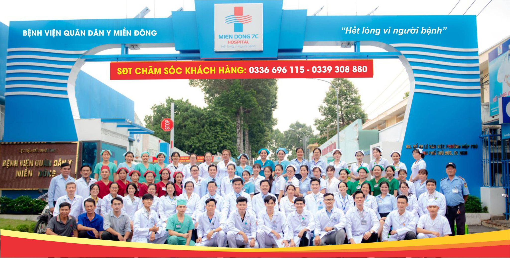

Về chúng tôi
Được thành lập từ năm 2005 với tôn chỉ "Vì sức khỏe cộng đồng, chúng tôi nỗ lực hôm nay". BV Quân Dân Y Miền Đông tự hào là một trong những bệnh viện uy tín hàng đầu tại Thành phố Hồ Chí Minh.
Với hơn 18 năm hình thành và phát triển, đội ngũ gồm 600+ nhân sự y tế chuyên nghiệp và gần 150 Bác sĩ chuyên khoa, chúng tôi phục vụ từ 2000 đến 3000 bệnh nhân mỗi ngày. Bệnh viện luôn nỗ lực mỗi ngày mang lại sự an tâm và chăm sóc tận tình cho người bệnh.

Tầm nhìn
Trở thành hệ thống bệnh viện uy tín, hiện đại, nơi mà người bệnh được chăm sóc sức khỏe toàn diện với dịch vụ chất lượng cao.
Sứ mệnh
Cung cấp dịch vụ chăm sóc sức khỏe với chất lượng cao thông qua đội ngũ chuyên nghiệp, trang thiết bị y tế hiện đại và tâm huyết phục vụ cộng đồng.
Giá trị cốt lõi
Tận tâm
Luôn nỗ lực, tâm huyết, để mang lại sự an tâm cho bệnh nhân
Trung thực
Minh bạch, trung thực, nói đi đôi với làm
Tôn Trọng
Tôn trọng bệnh nhân, tôn trọng đồng nghiệp, tôn trọng nền tảng
Tiến phong
Chủ động đổi mới, nắm bắt xu thế y tế hiện đại
Thấu hiểu
Lắng nghe, đồng cảm, chia sẻ và hỗ trợ bệnh nhân